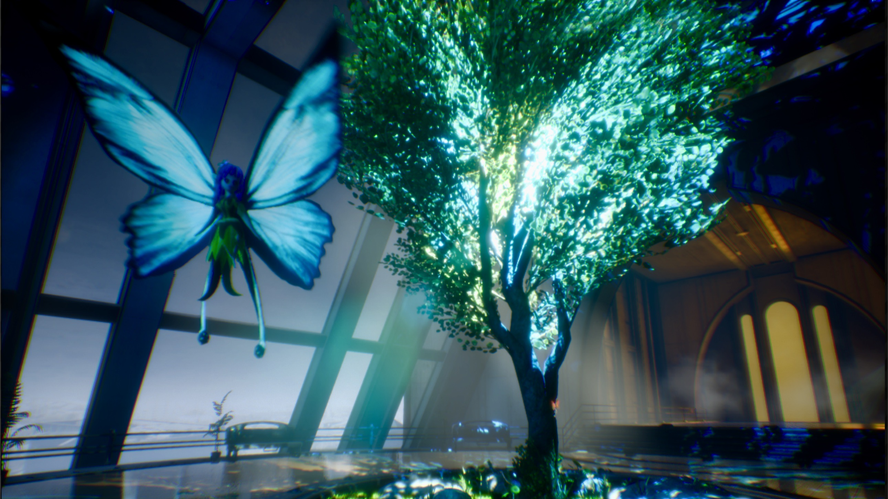

Schools with Game Development
Here are a few schools with game development majors or concentrations!
There are many other schools with game development options.
Some, like Kent State, have multiple programs.
Take your time to decide the best one for you!